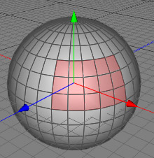

Normal Move Tool
The normal move tool is a very powerful tool when it comes to polygon modelling. Often it is necessary to move a polygon, edge or point selection along it's normals. This task can be quite painful with the transform tool but with the move normal tool it is just a simple mouse drag operation.
Note
The name Move Normal Tool can be a little bit confusing. It doesn't mean that the normals are moved, but rather that the points are moved along their normals. The images below demonstrate how a group of polygons have been moved along their normals. Note how the curvature of the sphere is still intact, but more importantly, the moved polygons still have the same centre point as the rest of the sphere.
 
Modes
The move normal tool can only be applied to raw polygon objects. It's behavior in point, edge and polygon modes are the same.


To perform a normal move, just select the points, edges or polygons you want to move with the select tool. Now choose the normal move tool with the menu command "Tools PolygonNormal Move" or a hotkey. You can now drag and drop your selected points, edges or polygons along their normals. Release the mouse button to finish the operation.
PolygonNormal Move" or a hotkey. You can now drag and drop your selected points, edges or polygons along their normals. Release the mouse button to finish the operation.
Keys
- none
Properties
- none